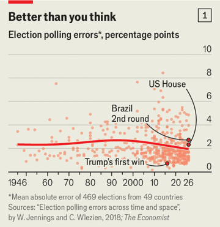

「我们总该害怕很多东西，」安德烈·罗曼沉吟道，「可我们对此无能为力。」他的沮丧不是为整个人类，而是为人类一项不太受赞誉的事业：选举民调。
罗曼的民调公司 AtlasIntel 在最近美国中期选举前对选民的调查相当准确。但多数民调机构低估了民主党的支持。而在巴西最近的总统选举中，AtlasIntel 错了两次：先说左翼现任总统卢拉会赢得第一轮，后又说其对手弗拉维奥·博索纳罗在第二轮领先。许多其他机构犯了同样的错。

chart: the economist
民调是不是越来越差了？我们的分析显示并非如此。在政治学教授威尔·詹宁斯与克里斯托弗·弗莱津建立的数据集基础上，本刊分析了 1946 至 2026 年间 49 个国家 469 场选举的民调。我们发现，80 年来民调准确度略有提高：选举前十天内的民调平均值，预测某党或某候选人得票率的平均误差仅两个百分点（见图 1）。
考虑到困扰民调业的方法难题，这个结果更了不起。民调本不该管用，理由很多，但它就是管用——而且比替代方案都管用。
民意调查的原理很简单：如果在一群人里随机抽足够大的样本询问看法，你就能相当准确地说，全体人都持这种看法。民调先驱乔治·盖洛普把它比作尝汤：只要汤搅匀了，一勺就够。
实践中，要保证样本真正随机非常难。1936 年，美国《文学文摘》杂志根据读者寄回的 240 万张明信片（今天难以想象的样本量）推断共和党人兰登会当选总统。结果罗斯福以压倒优势连任。样本也许很大，但并不随机。
此后是民调业务的第一轮、也是许多轮重塑之一：它转向「科学」方法。1950、1960 年代多数机构依靠随机地址的入户面访；1970、1980 年代转向随机拨号的电话访问。但普通选民越来越不愿搭理民调。民调公司 YouGov 的道格·里弗斯回忆：「我刚入行时，做一个电话调查能拿到 50% 的回复率。」现在他估计只有 1-2%。
于是多数机构放弃了严格随机抽样。如今最常见的形式是自愿报名的在线样本库，每完成一份问卷给报酬。民调不靠随机，而靠对不同类型受访者设配额，再用事后「加权」把样本调整得能代表全体。加拿大公司 Léger 最近一次美国民调中，60% 的受访者 55 岁以上；加权之后，他们只占样本的 41%——离随机抽样的理想差得很远。
与某些阴谋论相反，民调机构有强烈动机把选举民调做对。选举民调其实不是赚钱生意，而是广告：说服客户委托其他课题的研究。搞砸一次选举会伤声誉。「我们过去常说，政治民调带来 90% 的曝光和不到 1% 的收入，」另一家民调公司益普索的前老板本·佩奇说。
但民调者的判断仍然关键。比如 2016 年，《纽约时报》把同一批佛罗里达选民的原始数据给了四家机构。加权之后，四家得出四种不同的选举结论：一家显示特朗普领先 1 个百分点，另一家显示他落后 4 个。
民调公司必须玩「打地鼠」：纠正上次选举的错误，预判下次的错误。近年讨论最多的是「无应答偏差」：不愿被调查的人在政治上偏向一边。随着许多西方国家的政治从经济议题转向文化议题，受教育程度高的选民（更可能回应民调）转向中左政党。包括詹宁斯和弗莱津在内的团队发现，全球范围内民调平均高估左翼政党 1.4 个百分点。
在美国，这种效应被共和党对大学、媒体等机构的怀疑放大——这些机构往往委托或制作民调。过去三届美国总统选举，民调都大幅低估了特朗普的支持。《华盛顿邮报》10 月堪萨斯州参议员选举的民调显示，32% 的民主党人回应，共和党人只有 12%。这个差距不仅说明共和党人被低估，也说明少数回应的共和党人可能不具代表性。
除了无应答偏差，在线民调还要对付「低质量」受访者——他们更关心拿到问卷报酬，而不是表达观点。佩奇把剔除这类人比作俄乌之间的无人机战：双方创新的速度一样快。
「民调越来越像统计建模，而不只是抽样，」詹宁斯说。中期选举中最成功的民调项目之一，是《纽约时报》与西耶纳学院的合作。今年这个团队采用了一套极其复杂的加权体系，估算全国每位登记选民的左右立场，以确保民调在意识形态上有代表性。此外，他们不再按每个人口特征分别加权，而是建立一套系统，评估受访者其特征组合相对于全体人口有多罕见（「能量平衡」）。旧方法会平均高估民主党参议员候选人的胜选幅度 3 个百分点，新系统几乎没有偏差。
那么美国和巴西的民调错在哪？「动员在两轮投票里都是结果的关键组成部分，程度前所未有，」巴西的罗曼说。「第一轮卢拉的选民没出来，第二轮他们大规模出来了。」博索纳罗第一轮获胜后，中左选民意识到他真的可能当总统。卢拉的支持者被激发，尤其在社交媒体上。总投票率从 1.19 亿升到 1.24 亿，在卢拉获胜的市镇增幅更大，大城市尤其明显。最终他以 52% 的得票率获胜，比选前民调高 4 个百分点。
美国中期选举的投票率似乎也被误判。本刊分析了 10 月发布的七份民调，它们都附有样本构成的详细拆分。自称 2024 年投给哈里斯的人，比投给特朗普的人多两个百分点。这个数字本身已包含民调机构的投票率调整：现实中她输了 1.5 个百分点。但出口民调显示，今年 11 月的实际选民更偏蓝，对哈里斯的好感领先 5 个百分点。若据此回溯调整，民主党领先从 9.5 个百分点变成 11.5 个，解释了约一半的误差（民主党实际赢 14 个百分点）。
对民主党来说，这种热情优势部分来自黑人选民，尤其在南方——他们帮助民主党在深红的南卡罗来纳和密西西比选出参议员。《纽约时报》估计，黑人在这两州选民中分别占 24% 和 33%，比 2024 年高 3 个百分点。此外，拉美裔选民的投票人数也高于以往中期选举。与此同时，许多共和党人待在家里。在 2024 年哈里斯以超过 80% 得票率赢下的县和选区，中期选举投票率约为总统选举的 81%；在特朗普以超过 80% 赢下的地方，低 12 个百分点。
选举暴露了民调的特定弱点。「我的总体看法是，如今的调查在识别『不投票的人』上完全不行，」里弗斯说。回应民调的人，天生比不回应的人更投入、更可能投票。同时，受访者在回答投票可能性时往往过于乐观（或者不诚实）。人口特征类问题相对稳定、回答也较准确，投票率却是流动的。「典型做法是让人在 1 到 10 之间给自己的投票可能性打分，」佩奇说，「但如果回答 8、9、10 的人突然大增，你信不信？」
尽管有这些弱点，民调的失误也说明机构在努力改进估计。巴西的机构在第一轮后重新加权，以反映投给博索纳罗的选民结构。这在方法上是合理的，尽管导致他们在第二轮高估了他的支持。而美国机构则在纠正 2024 年低估共和党的错误（见图 2）。
chart: the economist
本刊对今年国会选举的预测，试图依据历史数据预判民调误差。我们的模型错误地判断民调高估了民主党——因为预测中的压倒性胜利往往会缩水。模型还判断，今年民调中未决定选民比例低，对共和党是好兆头，因为未决定者往往在中期选举中投给在野党。这些因素使模型的核心预测放大了民调误差，而不是纠正它。
美国和巴西民调失误的相似性，可能让一些人预测其他选举也会出现同样的偏斜。乐观的中间派也许会得出结论：极化右翼候选人总能激发中左选民违背民调去投票。法国的中间派正这样期待，他们忐忑地看着明年的总统选举。民粹右翼国民联盟的勒庞在第一轮民调中以约 35% 平均领先，在多数第二轮假设对决中也领先。过去两届总统选举，中间派总统马克龙都稳稳击败勒庞，得票率还略高于民调预测。
但「民调反复出错」的历史证据很薄，更别说跨国家、跨候选人的总统选举。事实上，多数民调中的第二名是左翼激进人物梅朗雄，支持率约 17%。他是法国最极化、最不受欢迎的人物之一；而自 2022 年以来，选民对勒庞的看法在转暖。因此两人对决不太可能激发大批选民去阻击勒庞。更何况法国机构可能已从过去的错误中学到东西，甚至过度纠正。民调出错当然可能，但指望它出错从来不是好策略。（本刊的法国选举预测模型将于明年发布。）
同样，社会民主党人希望西班牙首相桑切斯——这位左翼的「逃生大师」——能重演 2023 年违背民调的戏法，保住权力。那一年，民调低估了他的社会党约 3 个百分点，刚够拼出一个左翼与地区政党的联盟继续执政。本刊对 11 月 29 日选举的民调追踪显示社会党支持率 27%，略低于中右人民党的 31%。但自 2023 年以来，桑切斯的联盟伙伴失势，民粹右翼 Vox 上升。右翼政党合计民调 50%，按西班牙选举制度应能拿到多数；左翼 35%，地区政党 9%。民意仍可能变化，但如果民调成立，只有异常大的误差才能救桑切斯。
明年，波兰和意大利焦虑的观察者无疑也希望出现对自己有利的民调失误。但没有迹象表明民调误差在变大，也没有迹象表明过去略微偏左的偏差变成了偏右。两个百分点的平均绝对误差不排除大错的可能，但考虑到越来越深的陷阱，这已经相当准确。从中期选举竞选早期，民调就清楚显示民主党将大胜、拉美裔尤其转向。民调平均值预见到了「一代人一次」的蓝色浪潮，只是没预见到两次——这大概可以原谅。
最重要的是，民调比替代品都好。在许多最著名的失误中——英国脱欧公投、2016 年特朗普当选——民调比多数评论员更接近最终结果。脱欧公投前对 33 名英国记者的调查发现，32 人预计留欧。一些被吹捧的替代方案，如社交媒体监测，从未真正起飞；另一些如预测市场或 AI 生成的调查，本身就依赖民调。那位在 2024 年押注特朗普连任赚了 8,000 万美元的著名预测市场「巨鲸」，据报道就曾委托 YouGov 做私下民调。
民调成绩虽好，从业者仍应讲清缺陷。对机构而言，核心是透明。《华盛顿邮报》和《纽约时报》公布的调查方法说明，帮助外界理解了这次选举的民调背景。更多关于抽样与加权的信息能加强审视，更容易剔除假民调和「野路子」机构。即便结果出人意料也照常发布，有助于避免「羊群效应」——机构不愿冒险而互相靠拢，导致民调失真。
而民调的消费者必须理解其局限：对任何单份民调都该保留怀疑；尽可能参考多份调查的平均值，比如本刊的追踪；在任何选举中，都要准备好各党各候选人的民调可能朝任一方向偏几个百分点。民调比以往更好，但不是不会错。